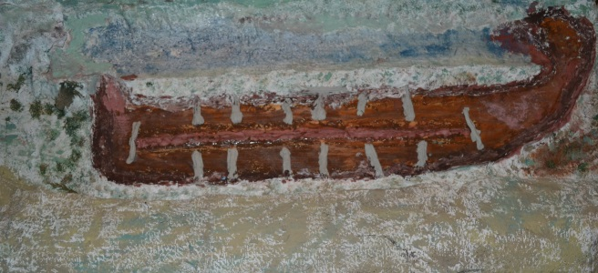

Irrigation System Project

This was a project that I did back in Elementary School, where I simulated the workings of an Egyptian irrigation system.
I constructed the model with my father using some rain gutters topped with Papier-mâché for the mountains and clay and water proofing materials for the gates and basin.
We used some wood for the base and legs of the apparatus. I used a plastic tub, a pump, and a plastic tube to maintain the circulation of water in the model.
It was a pretty cool project when seen in person.